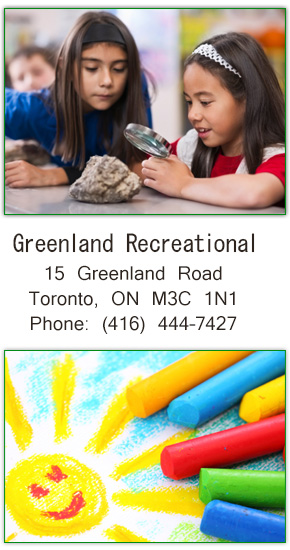

Location
GRASP is located at 15 Greenland Road on the Greenland Public School property. We are South of Lawrence Ave., just off of The Donway East (behind St. Mark's Church). The daycare office is located in the portable at theback of the west parking lot, on the West side of the school.